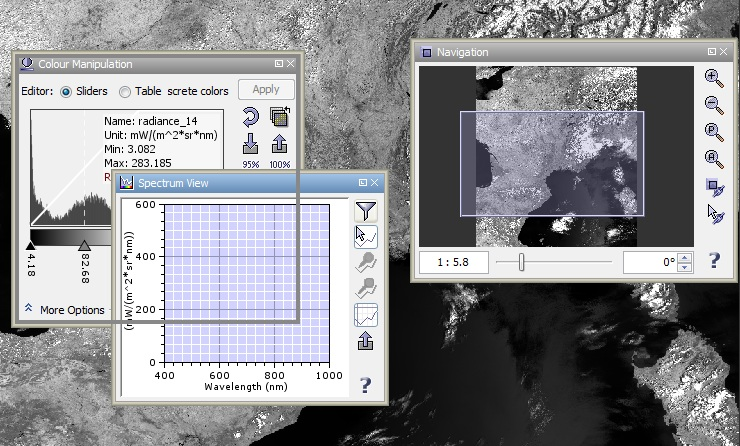
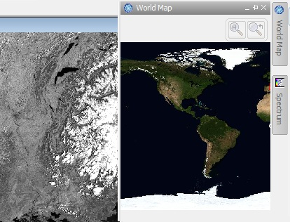
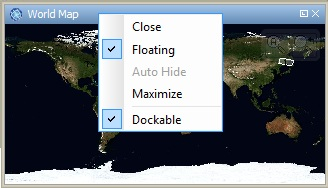

| Tool Windows | |
Tool windows are used in VISAT to display information and properties of the currently selected data product or component of a data product. They are also used to manage and edit the properties of the current view, such as pins, masks or the colours of the current image view. In contrast to image or metadata views, VISAT has only a single instance of each particular tool window. It can be shown, hidden, docked or floating. Tool windows can also be grouped together. Users can also save and reload the current layout of tool windows and tool bars.
You will find all available tool windows in the View/Tool Windows menu. Many tool windows also have corresponding tool bar icons.
You can drag each tool window by clicking and holding its title bar. The outline of the window is shown while you are dragging around the tool window. The outline shows you wehere it will be dropped if you release the mouse button.
Note:
To group multiple tool windows in one window you have to move the mouse pointer,
while dragging one window, on the title bar of an other tool window and hold down simultaneously the CONTROL-Key.
You will get one window with one tab for each grouped tool window.
To remove a tool window from a group you have to drag the tab out of the grouped window stack.

The view menu contains the entry 'Manage Layout'. This menu consists of
items to manage the current layout.
If a tool window is docked to one side, you can hit the pin button in its title bar, it will switch in to the tab mode. Which means that the tool window collapses and on the side a tab appears representing the window. If you move the mouse pointer over this tab the tool window will expand. When leaving the tool window area the window slides automatically away.
Note: To switch a tabbed window back into the floating mode you have to hit the pin icon in the title bar, to dock to window first. If it is docked you can put it into floating mode by dragging its title bar.

The context menu is invoked by clicking with the right mouse button on the title bar of a tool window.

In this menu you can do